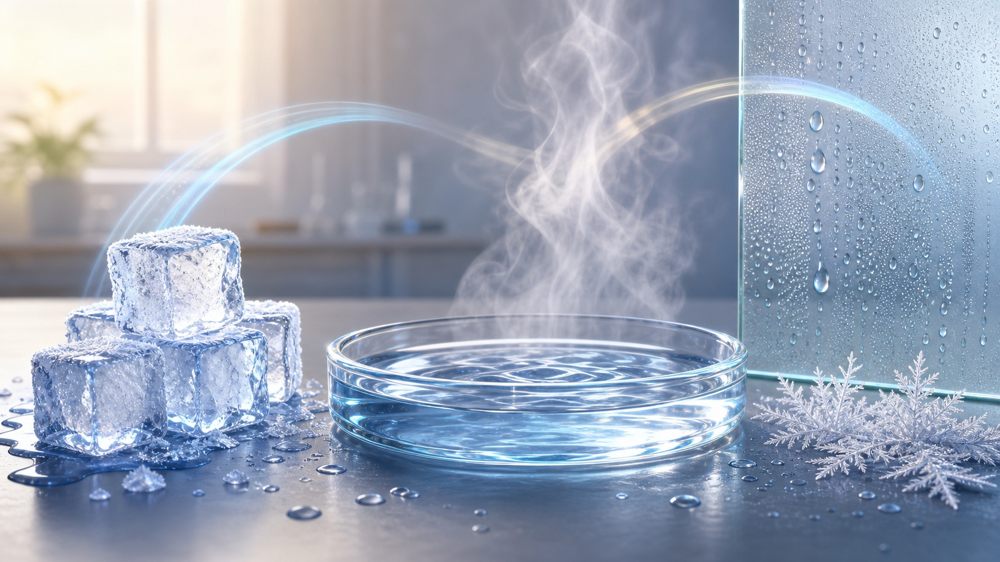

熔化与凝固
固态变液态叫熔化，吸热；液态变固态叫凝固，放热。晶体有固定熔点和凝固点。

第三章 · 物态变化
第三章把生活现象串成一张变化地图：温度计怎样读，晶体熔化为什么会有平台，水沸腾后为什么温度不再升高，蒸发为什么会变凉，霜和冰花为什么不是“冻住的露水”。
第 1 节
温度表示物体的冷热程度。实验室温度计要看量程和分度值，玻璃泡全部浸入液体，稳定后再读数，视线与温度计内液柱上表面相平。
等示数稳定后再读数，视线与温度计内液柱上表面相平。
下面哪种读数姿势正确？
读数时，温度计玻璃泡仍要留在被测液体中。
第 2-4 节
固、液、气之间的转化不只是名字不同，它们和吸热、放热紧密相连。抓住“往更自由的状态变通常吸热，往更聚集的状态变通常放热”。
固态变液态叫熔化，吸热；液态变固态叫凝固，放热。晶体有固定熔点和凝固点。
液态变气态叫汽化，吸热，包括蒸发和沸腾；气态变液态叫液化，放热。
固态直接变气态叫升华，吸热；气态直接变固态叫凝华，放热，如霜、雾凇。
自然界的水循环
判断水循环现象时，先找水的初态和末态。云不是水蒸气，而是悬浮在空中的小水滴和小冰晶。
液态水变成水蒸气是汽化，需要吸热。
图像实验
晶体熔化和水沸腾都可能出现温度平台。平台阶段仍在吸热，能量用于改变状态，而不是继续升温。
晶体熔化时有水平平台：继续吸热，但温度暂时保持不变。
实验题专项
期末卷常把沸腾实验放进生活情境里，真正要看的是器材安装、现象判断、温度计读数和变量控制。
先放酒精灯，再根据外焰高度安装陶土网、烧杯，最后放温度计。
大量气泡上升、变大并在水面破裂，是判断水已沸腾的直接现象。
温度保持在沸点附近，不代表停止吸热，能量主要用于汽化。
三支温度计测同一杯热水，是检验温度计差异；同一支温度计测不同水样，是检验水样差异。
把下面 5 个步骤调成合理顺序，再检查自己的实验思路。
每隔相同时间记录温度，观察气泡变化。
点燃酒精灯，用外焰给烧杯中的水加热。
先固定酒精灯，再根据外焰高度安装陶土网和烧杯。
悬挂温度计，让玻璃泡全部浸入水中且不碰烧杯底和壁。
根据温度平台和气泡现象判断沸腾，并说明沸腾仍需吸热。
提示：实验装置通常先按酒精灯外焰高度确定其他器材位置。
阅读题专项
阅读题给出“线膨胀系数”时，不需要背新结论。看懂关系式：伸长量 = 线膨胀系数 × 原长 × 温度变化量。
α 表示线膨胀系数，L 表示原长，ΔT 表示升高或降低的温度。
相同条件下，铝伸长更多，所以铝铜双金属片受热会向铜侧弯曲。
第三章检查
完成下面 8 题，检查自己是否能用温度、状态变化、实验方法和吸放热解释生活现象。
阶段检查
这 8 题覆盖机械运动、声现象和物态变化。提交后会按题目给出回看建议。